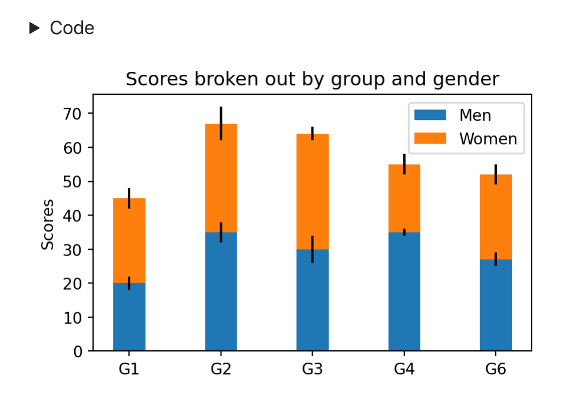

Jupyter Options
Overview
This article describes how to specify options that control a wide variety of rendering behaviors, including:
- Whether code is hidden, shown, or folded.
- How to treat warnings and errors in output.
- Specifying the size, alignment, and captions for figures.
- Declaring render-time notebook parameters
- Whether intermediate files (e.g. .md, .tex, and .ipynb) are preserved.
Most options can be specified at the document level or the cell level.
Cell Output
There are a number of tags available that control the display of cells in rendered documents:
| Options | Description |
|---|---|
show-code hide-code |
Show or hide cell code |
show-output hide-output |
Show or hide cell output |
show-warnings hide-warnings |
Show or hide warnings / stderr |
hide-cell |
Hide cell entirely (all code and output) |
These can all be set on document or per-cell level. For example, to hide all code and warnings at a document level:
---
title: "My document"
hide-code: true
hide-warnings: true
jupyter: python3"
---To hide code and warnings for an individual cell:
```python tags=["hide-code", "hide-warnings"]
import pandas as pd
d = {'one' : [1., 2., 3., 4.],
'two' : [4., 3., 2., 1.]}
df = pd.DataFrame(d)
df
```Code Folding
For HTML output, Quarto enables you to specify that code is included in the document but hidden by default using the <details> tag. For example:

To specify that all cells within a document should use code folding, use the code-fold option:
---
title: "My Document"
format:
html:
code-fold: true
jupyter: python3
---You can also set code folding on a per-cell basis with the fold attribute:
```python fold=true
import pandas as pd
d = {'one' : [1., 2., 3., 4.],
'two' : [4., 3., 2., 1.]}
df = pd.DataFrame(d)
df
```Use the code-summary option to provide a custom caption for the <details> tag:
---
title: "My Document"
format:
html:
code-fold: true
code-summary: "Show the code"
jupyter: python3
---You can provide summary text per-cell with the summary attribute:
```python summary="Show the code"
1 + 1
```If you want all foldable code regions to be shown by default, use code-fold: show. For example:
---
title: "My Document"
format:
html:
code-fold: show
jupyter: python3
---This can also be specified on a per-cell basis:
```python fold="show"
1 + 1
```Allowing Errors
By default, rendering terminates when a runtime error is encountered while executing a cell. In some cases however you want to actually display errors and continue (e.g. if you are writing a tutorial and want to show errors explicitly). Use the allow-errors option to continue execution after errors (and print the error message in the output):
---
title: "My Document"
allow-errors: true
jupyter: python3
---You can also use the "allow-errors" tag to do this on a per-cell basis:
```python tags=["allow-errors"]
1 / 0
```Figures
Format and Size
For each Pandoc output format (e.g. html, pdf, docx, etc.), Quarto defines an ideal figure width and height based on the typical viewport and/or physical size for that format. For example, html output defaults to 7x5 inches whereas docx output uses 5x4 inches. Presentation formats (e.g. pptx or beamer) have much larger default sizes so that figures fit themselves well to slides.
You can override these defaults using the fig-width and fig-height options:
---
title: "My Document"
format:
html:
fig-width: 8
fig-height: 3
jupyter: python3
---These defaults sizes, formats, and DPI values are automatically forwarded to selected graphics libraries:
If you are using another library, you can retrieve these values from the following environment variables:
| Variable | Description |
|---|---|
QUARTO_FIG_WIDTH |
Width (in inches) for figures. |
QUARTO_FIG_HEIGHT |
Height (in inches) for figures |
QUARTO_FIG_FORMAT |
Preferred output format. Valid values are “png”, “jpeg”, “svg”, and “pdf” |
QUARTO_FIG_DPI |
Dots per inch (DPI) for figures. Note that it’s important to forward this value on to the graphics library so that retina (high DPI) images can be handled correctly for HTML output. |
Figure Captions
If you want your figures to appear with captions below them, use the fig.cap attribute on the code block that produces the figure:
```python fig.cap="Caption"
import matplotlib.pyplot as plt
plt.plot([1,23,2,4])
plt.show()
```If you have a code block that produces multiple figures, you can specify a list of captions:
```python fig.cap=["Caption", "Second Caption"]
import matplotlib.pyplot as plt
plt.plot([1,23,2,4])
plt.show()
plt.plot([8,65,23,90])
plt.show()
```Figures with captions are by default center-aligned. You can change this using the fig-align attribute:
```python fig.cap="Caption" fig.align="left"
import matplotlib.pyplot as plt
plt.plot([1,23,2,4])
plt.show()
```Intermediates
When you render Jupyter Markdown, there a number of intermediate files created. By default, these files are removed, however you can request that they be preserved using these options:
| Option | Description |
|---|---|
keep-md |
Keep the markdown that contains executed notebook output (this the markdown that is fed to Pandoc for rendering to the final output format). |
keep-ipynb |
Jupyter Notebook created by rendering the code chunks in the Jupyter Markdown file. |
keep-tex |
Keep the intermediate TeX file generated by Pandoc (this is the TeX input that is provided to pdflatex for rendering to PDF) |
Specify these options at the document level. For example:
---
title: "My Document"
keep-ipynb: true
jupyter: python3
---Execution
You might wish to prevent execution of code cells when rendering (for example, if it’s very expensive and you just want to preview markdown output). You can do this by adding execute: false as a YAML metadata option:
---
title: "My Document"
execute: false
jupyter: python3
---Alternatively, you can pass the --no-execute option to the quarto render command:
$ quarto render notebook.md --no-executeA better option for expensive to render documents is to use caching. See the Jupyter Cache documentation for additional details.
Parameters
You may have a set of parameters that you use to create different variations of a document. For example:
- Showing results for a specific geographic location.
- Running a report that covers a specific time period.
- Running a single analysis multiple times for different assumptions.
Quarto uses the same syntax for defining parameters as Papermill. To parameterize a notebook, designate a cell with the tag parameters and provide appropriate default values:
```python tags=["parameters"]
alpha = 0.1
ratio = 0.1
```To render using different parameters you can pass them on the command line using the -P flag:
$ quarto render notebook.md -P alpha:0.2 -P ratio:0.3Alternatively you can create a YAML file that defines the parameter values you want to render with, then call quarto render with the --execute-params flag:
$ quarto render notebook.md --execute-params params.ymlKernel Lifetimes
By default, quarto render keeps the Jupyter kernel used to render a document alive for 5 minutes in case a subsequent render wants to utilize the kernel. This makes rendering much faster for subsequent runs since no kernel start-up time is required.
You can change this default behavior using the kernel-keepalive option. For example:
---
title: "My Document"
kernel-keepalive: 60
jupyter: python3
---You can also specify this option at the command line using the --kernel-keepalive flag:
$ quarto render notebook.md --kernel-keepalive 0The above example specifies 0, which means don’t keep the kernel around at all.
You can force a kernel restart using the --kernel-restart flag:
$ quarto render notebook.md --kernel-restart